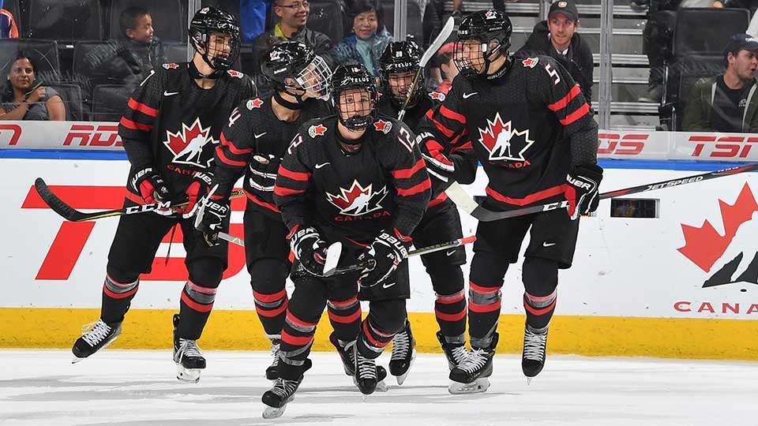
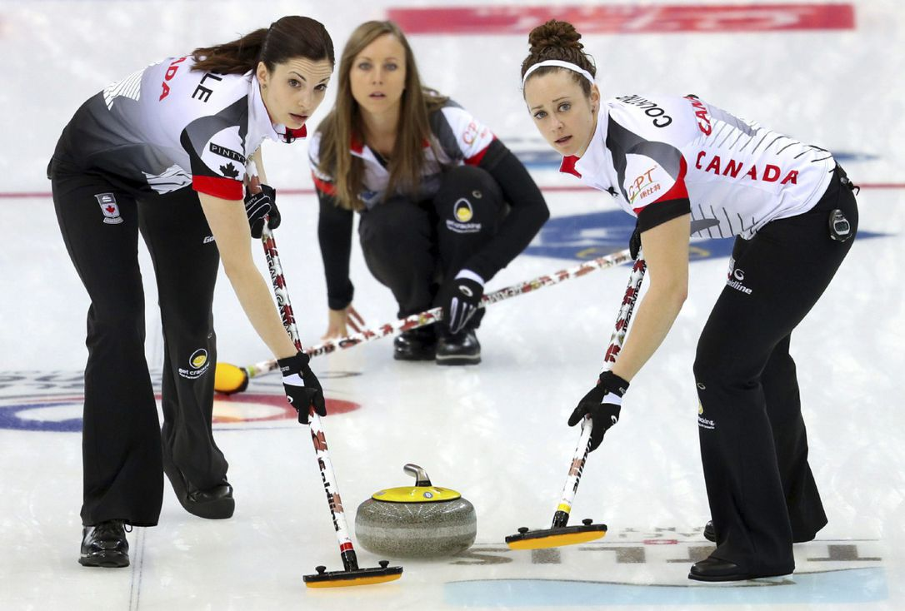
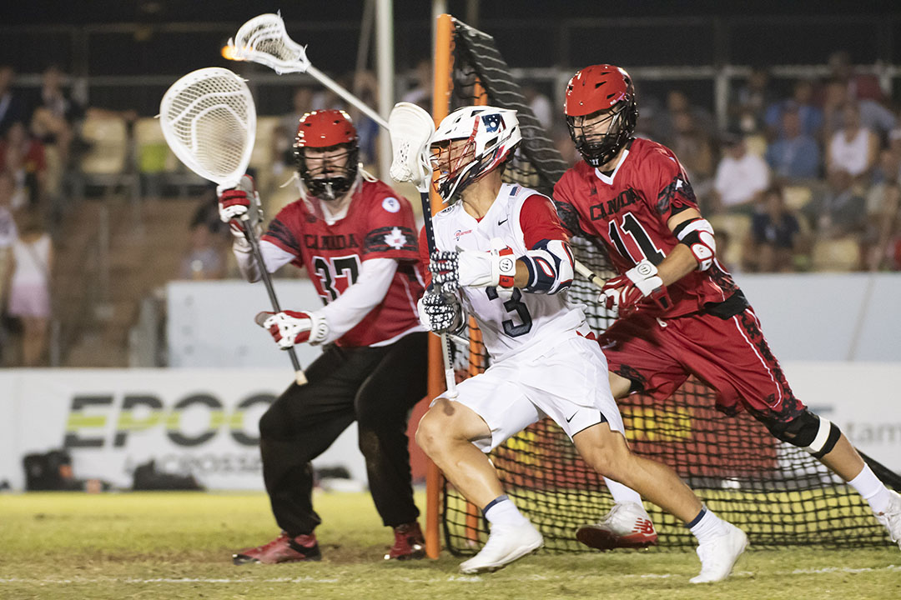

Text je přeložen přes Google Překladač
Sporty v Kanadě se skládají z celé řady her. Nejběžnější sporty jsou lední hokej, lakros, mřížový fotbal, fotbal, basketbal, curling a baseball, přičemž lední hokej a lakros jsou oficiální zimní a letní sporty. Lední hokej, nazývaný jednoduše „hokej“, je nejrozšířenějším zimním sportem Kanady, nejoblíbenějším diváckým sportem a nejúspěšnějším sportem v mezinárodní soutěži. Lacrosse, sport s původními původy, je nejstarším kanadským sportem. Kanadský fotbal je v Kanadě druhým nejoblíbenějším diváckým sportem a je nejpopulárnější v prérijních provinciích. [1] Kanadská fotbalová liga je každoroční šampionát, šedý pohár, je jeden z země je největší každoroční sportovní události. Zatímco jiné sporty mají větší diváckou základnu, fotbalový svaz, známý v Kanadě jako fotbal v angličtině a francouzštině, má nejvíce registrované hráče jakéhokoli sportovního týmu v Kanadě. Profesionální týmy existují v mnoha městech v Kanadě. Statistiky Canada hlásí, že mezi prvních deset sportů, které se Kanaďané účastní, jsou golf, lední hokej, plavání, fotbal, basketbal, baseball, volejbal, lyžování (sjezdové a alpské), cyklistika a tenis. Jako země s obecně chladnými zimami zaznamenala Kanada větší úspěch na zimních olympijských hrách než na letních olympijských hrách, ačkoli významné regionální rozdíly v klimatu umožňují širokou paletu týmových i individuálních sportů. Mezi hlavní multi-sportovní akce v Kanadě patří zimní olympijské hry 1988 a 2010 a letní olympijské hry 1976. Velké úspěchy v kanadských sportech uznává kanadská sportovní síň slávy, zatímco Lou Marsh Trophy je každoročně udělována nejlepšímu kanadskému atletovi panelem novinářů. V Kanadě je mnoho dalších sportovních hal sláv.
Národní sportyKanada v současné době má dva de jure národní sporty, lední hokej a lakros. V květnu 1964 provedl bývalý prezident kanadské asociace amatérského hokeje a poté současný člen parlamentu Jack Roxburgh rozsáhlý výzkum, aby zjistil, zda kanadský parlament někdy vyhlásil národní hru, a konkrétně se zabýval tím, zda je lacrosse oficiálně prohlášena. Poté, co prošel parlamentními záznamy, zjistil, že nebyl přijat žádný zákon. Kanadský tisk hlásil v té době, že mýtus o lakrosu jako kanadské národní hře možná pochází z knihy publikované v roce 1869 s názvem Lacrosse, Národní hra Kanady, a že kanadské sdružení Lacrosse bylo založeno v roce 1867. Jeho snaha vyhlásit hokej za kanadskou národní hru se kryla s debatou Velké kanadské vlajky z roku 1964. 28. října 1964, Roxburgh přestěhoval se představit Billa C-132, s ohledem na deklaraci hokeje jako národní hru Kanady. Členové kanadské asociace lakrosu reagovali na tento návrh tak, že to označili za urážlivé a „mimo linii“, a slíbili, že proti němu budou bojovat. Dne 11. června 1965 Bob Prittie odpověděl zavedením samostatného zákona, aby byl lakros prohlášen za kanadskou národní hru, a prohlásil, že: „Myslím si, že v tuto chvíli je vhodné, když zvažujeme státní vlajky, národní hymny a další národní symboly, že tato konkrétní záležitost by měla být vyřešena nyní. “ Volba kanadské národní hry byla projednána v roce 1965, ale ani jeden návrh zákona nebyl schválen, když byl parlament rozpuštěn. V roce 1967, předseda vlády Lester B. Pearson navrhl pojmenovat národní letní a zimní hry, ale nic nebylo vyřešeno. V roce 1994 protestovaly skupiny First Nations proti vládnímu návrhu zákona, který navrhoval zřízení ledního hokeje jako kanadského národního sportu, a argumentoval tím, že zanedbával uznání hry lacrosse, což je jedinečný domácí příspěvek. V reakci na to poslanecká sněmovna pozměnila návrh zákona, kterým „uznává hokej jako kanadský zimní sport a lacrosse jako kanadský letní sport“. 12. května 1994, národní sporty Kanady akt vstoupil v platnost s těmito označeními. Ačkoli legislativa zahrnovala sezónní označení, oba sporty lze hrát v různých ročních obdobích. Lakros lze hrát po celý rok, ve všech ročních obdobích, uvnitř i venku. Během chladnějších ročních období může být hokej hrán indoor i venku, ačkoli v teplejších obdobích vyžaduje jeho hra použití umělého ledu, který se obvykle nachází na krytém kluziště.
Lední hokej 1/3
Curling 1/3
Lacrosse 1/3
